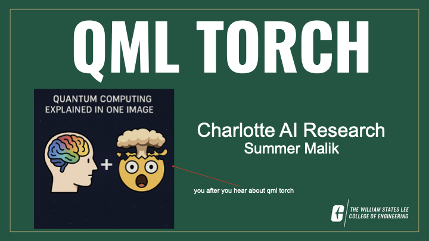

Academic year: 2025-2026
Status: Working plan. Everything in this deck is subject to change as the group and framework develop.

I introduced QML Torch as an open-source framework for integrating quantum computing into machine learning workflows using a PyTorch-style interface. Existing tools such as PennyLane and Qiskit are powerful, but a beginner can still spend a lot of time configuring devices, writing encodings and ansatzes, wrapping QNodes, managing batches, and debugging gradient shapes. QML Torch aims to place those concerns behind reusable components so a student can focus on the experiment.
The long-term interface is intentionally familiar: import the library and add a quantum layer in the same spirit as adding an ordinary neural-network layer. Built-in choices can handle encoding, circuit architecture, readout, batching, gradients, and device setup.
The deck makes an important boundary explicit: the group is not promising that quantum always beats classical machine learning. We use simulators and available cloud tools, build hybrid models at realistic scales, and compare them with classical baselines. The research question is where quantum representations, sampling behavior, or circuit structure can offer something useful enough to justify the added complexity.